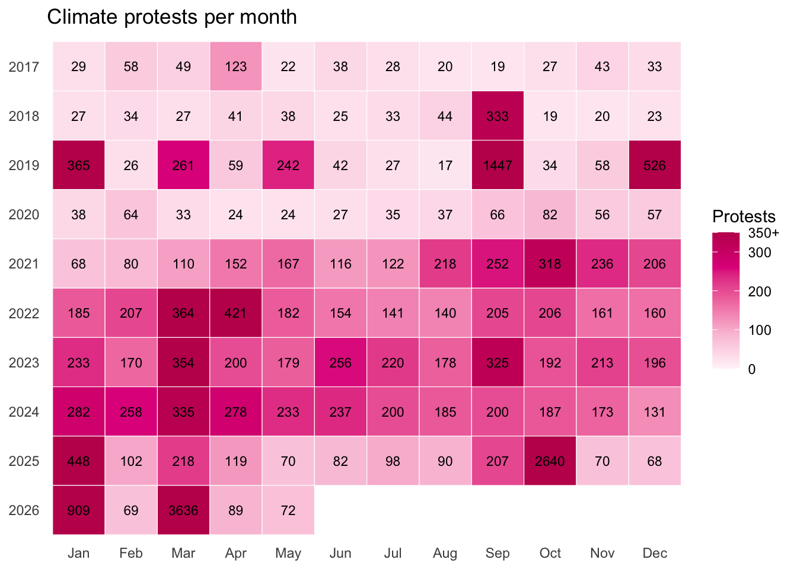

── Attaching core tidyverse packages ──────────────────────── tidyverse 2.0.0 ──
✔ dplyr 1.2.1 ✔ readr 2.2.0
✔ forcats 1.0.1 ✔ stringr 1.6.0
✔ ggplot2 4.0.3 ✔ tibble 3.3.1
✔ lubridate 1.9.5 ✔ tidyr 1.3.2
✔ purrr 1.2.2
── Conflicts ────────────────────────────────────────── tidyverse_conflicts() ──
✖ dplyr::filter() masks stats::filter()
✖ dplyr::lag() masks stats::lag()
ℹ Use the conflicted package (<http://conflicted.r-lib.org/>) to force all conflicts to become errorsMilestone Two
For Milestone #2, I want to communicate where the culmination of my weekly output has gotten me. At this point, I have identified my protest waves, and began to download/clean my wikipedia data. Lets take a look:
Reading in Protest Data
The CCC data comes in three time periods, so the first step was to combine them all.
[1] "data/raw/ccc/ccc_compiled_20172020.csv"
[2] "data/raw/ccc/ccc_compiled_20212024.csv.gz"
[3] "data/raw/ccc/ccc-phase3-public.csv" [1] 275151[1] 114# A tibble: 6 × 5
date locality state issues issue_tags
<chr> <chr> <chr> <chr> <chr>
1 2017-01-01 Washington DC military <NA>
2 2017-01-01 Mankato MN military <NA>
3 2017-01-01 Minneapolis MN banking and finance; economy; ener… <NA>
4 2017-01-01 Little Compton RI environment; guns; military <NA>
5 2017-01-01 Oak Ridge TN military <NA>
6 2017-01-02 Washington DC military <NA> # A tibble: 1 × 4
issues issue_tags tags_summary total_rows
<int> <int> <int> <int>
1 131060 137452 198532 275151[1] 6639# A tibble: 20 × 2
topic n
<chr> <int>
1 foreign affairs 23772
2 policing; racism 11820
3 military 11196
4 policing;racism 9671
5 immigration 7807
6 education; guns 7299
7 labor 7008
8 <NA> 6639
9 democracy;presidency 6163
10 presidency 5757
11 environment 5463
12 racism 4242
13 democracy;economy;education;environment;guns;healthcare;immigration;pr… 3564
14 religion;reproductive rights 3513
15 guns 3048
16 democracy 2962
17 healthcare;labor 2948
18 foreign affairs;military 2781
19 corruption;democracy;economy;education;environment;guns;healthcare;imm… 2507
20 lgbtqia 2466[1] 6639[1] 23773# A tibble: 15 × 2
topic n
<chr> <int>
1 environment 5463
2 democracy;economy;education;environment;guns;healthcare;immigration;pr… 3564
3 corruption;democracy;economy;education;environment;guns;healthcare;imm… 2507
4 democracy;economy;environment;healthcare;housing;immigration;labor and… 836
5 development;environment;policing;racism 741
6 banking and finance;energy;environment 627
7 energy;environment 540
8 energy;environment;indigenous peoples 361
9 banking and finance;economy;energy;environment 360
10 development;energy;environment 359
11 energy; environment 352
12 civil rights; disability rights; economy; environment; immigration; la… 332
13 development; economy; energy; environment; indigenous peoples; labor; … 293
14 environment;indigenous peoples 225
15 civil rights;economy;environment;guns;immigration;labor and workers ri… 219At this point, I realized there were some events that were untagged. We will now do a test to interrogate the distribution of untagged events.
# A tibble: 10 × 2
year n
<chr> <int>
1 2017 1081
2 2018 1530
3 2019 567
4 2020 409
5 2021 594
6 2022 616
7 2023 545
8 2024 616
9 2025 442
10 2026 239[1] 0.02412857The untagged events (2.4%) are evenly distributed across all years, so I make the choice to drop them.
We now count how many climate/environmental protests happened in each month. As a reminder, we are looking at all of the data to find months in the top 10% of monthly protest counts. We will use these to build protest waves.
[1] 23773[1] "2017-01-01" "2026-05-31"[1] 0[1] 23773[1] "2017-01-01" "2026-05-31"[1] 0# A tibble: 113 × 2
month protests
<date> <int>
1 2017-01-01 29
2 2017-02-01 58
3 2017-03-01 49
4 2017-04-01 123
5 2017-05-01 22
6 2017-06-01 38
7 2017-07-01 28
8 2017-08-01 20
9 2017-09-01 19
10 2017-10-01 27
# ℹ 103 more rows[1] 10Yay! Now we can visualize our data. Previously, I tried histograms and bar graphs, but found this data best visualized in a heat map. Lets take a look at that process.
First, I did a heat map with no modifications.

This heat map does not have enough contrast to be readable. This is due to the strong outlier months. I decided to set a cap on the colour range at the 90th percentile.
climate |>
count(month, name = "protests") |>
pull(protests) |>
quantile(c(.1, .25, .5, .75, .9, .95, 1)) 10% 25% 50% 75% 90% 95% 100%
27.0 41.0 122.0 213.0 331.4 431.8 3636.0 Half of our months have 122 protest or fewer, 90% are under 331, but the upper percentile has 3636!! Lets try setting the cap at the 90th percentile. This means the top 10% will get the darkest pink, and everything else should be more visible on the heat map.
cap <- 350
climate |>
count(month, name = "protests") |>
mutate(
year = factor(year(month)),
mon = month(month, label = TRUE)
) |>
ggplot(aes(x = mon, y = fct_rev(year), fill = protests)) +
geom_tile(color = "white") +
geom_text(aes(label = protests), size = 3) +
scale_fill_gradientn(
colors = c("#FFF5F9", "#FAC4DA", "#F27BAE", "#E0218A", "#C2185B"),
limits = c(0, cap),
oob = scales::squish,
breaks = c(0, 100, 200, 300, 350),
labels = c("0", "100", "200", "300", "350+"),
name = "Protests"
) +
labs(x = NULL, y = NULL, title = "Climate protests per month") +
theme_minimal() +
theme(panel.grid = element_blank())
This whole situation made me realize I need to make a choice about my outliers. The outlier months are typically months with a large amount of multi-tagged protest - for example,
climate |>
select(date, issues) |>
filter(
year(date) == 2026,
month(date) == 3,
str_count(issues, "\\w+") > 10
) |>
head()# A tibble: 6 × 2
date issues
<date> <chr>
1 2026-03-07 corruption;democracy;education;energy;environment;foreign affairs;…
2 2026-03-14 corruption;democracy;education;energy;environment;foreign affairs;…
3 2026-03-21 corruption;democracy;education;energy;environment;foreign affairs;…
4 2026-03-25 economy;energy;environment;foreign affairs;labor and workers right…
5 2026-03-28 democracy;economy;education;environment;guns;healthcare;housing;im…
6 2026-03-28 democracy;economy;education;environment;guns;healthcare;immigratio…Check out all of these events from March of 2026. They all have over ten tags! Cultural context tells us that this is the month that the No Kings protests came to a head, as well as major demonstrations triggered by US attacks on Iran.
I came to the conclusion that I will not filter out these large protests; in short, climate change is not separate from the instituions that enabled unevenly distributed environmental harms in the first place, so the multifaceted protests may even aid my analysis by including that complexity outright.
Next step: Identify protest waves
The Clickstream data starts in late 2017, so my study window begins in December 2017. The last month of CCC data (May 2026) is only partly covered, so the window ends at the last full month. Every month in the window has at least one protest, so no months needed to be filled in as zero. A protest wave is a month in the top 10% of monthly counts.
#clickstream data needs two months to form a pair so we start in december 2017
study_start <- ymd("2017-12-01")
# the ccc dataset is incomplete fro may 2026 so we are going to go back one month from the last recorded month (may 2026) to ensure we only use months
study_end <- floor_date(max(climate$date, na.rm = TRUE), "month") %m-% months(1)
study_end[1] "2026-04-01"monthly_window <- monthly |>
filter(month >= study_start, month <= study_end)
nrow(monthly_window)[1] 101wave_cutoff <- quantile(monthly_window$protests, 0.90)
wave_cutoff90%
335 monthly_window <- monthly_window |>
mutate(wave = protests >= wave_cutoff)
monthly_window |> count(wave)# A tibble: 2 × 2
wave n
<lgl> <int>
1 FALSE 90
2 TRUE 11monthly_window |> filter(wave) |> select(month, protests)# A tibble: 11 × 2
month protests
<date> <int>
1 2019-01-01 365
2 2019-09-01 1447
3 2019-12-01 526
4 2022-03-01 364
5 2022-04-01 421
6 2023-03-01 354
7 2024-03-01 335
8 2025-01-01 448
9 2025-10-01 2640
10 2026-01-01 909
11 2026-03-01 3636# full list of wave months (print(n = Inf) shows every row)
monthly_window |> count(wave)# A tibble: 2 × 2
wave n
<lgl> <int>
1 FALSE 90
2 TRUE 11monthly_window |> filter(wave) |> select(month, protests) |> print(n = Inf)# A tibble: 11 × 2
month protests
<date> <int>
1 2019-01-01 365
2 2019-09-01 1447
3 2019-12-01 526
4 2022-03-01 364
5 2022-04-01 421
6 2023-03-01 354
7 2024-03-01 335
8 2025-01-01 448
9 2025-10-01 2640
10 2026-01-01 909
11 2026-03-01 3636# build the before/after pairs
month_pairs <- monthly_window |>
mutate(
before_month = lag(month),
before_protests = lag(protests),
before_is_wave = lag(wave)
) |>
filter(!is.na(before_month)) |> # drops Dec 2017, which only serves as a "before"
transmute(
before_month,
after_month = month,
before_protests,
after_protests = protests,
before_is_wave,
pair_type = if_else(wave, "wave", "ordinary")
)
count(month_pairs, pair_type)# A tibble: 2 × 2
pair_type n
<chr> <int>
1 ordinary 89
2 wave 11month_pairs |> filter(pair_type == "wave") |> count(before_is_wave)# A tibble: 2 × 2
before_is_wave n
<lgl> <int>
1 FALSE 10
2 TRUE 1We have now identified the “wave” months. Some notes: - 11 total wave months, with. cutoff of 335 (March 2024) - There is only one back to back wave (March and April 2022), meaning we have 10 “ordinary” pairs - 4 of the 11 waves are in March, which signals to me that I investigate this pattern (seasonal/spring mobilizations?) - 3 of the 11 months are in January, same question as above -I also want to check if the CCC’s tagging changed over time, as the most extreme waves are also quite recent. This could be because of the political events we spoke about earlier, but I want to make sure it is not an obvious data effect.
# A tibble: 2 × 2
pair_type n
<chr> <int>
1 ordinary 89
2 wave 11| Wave month | Month before | Protests before | Protests in wave | Change |
|---|---|---|---|---|
| Jan 2019 | Dec 2018 | 23 | 365 | 342 |
| Sep 2019 | Aug 2019 | 17 | 1,447 | 1,430 |
| Dec 2019 | Nov 2019 | 58 | 526 | 468 |
| Mar 2022 | Feb 2022 | 207 | 364 | 157 |
| Apr 2022 | Mar 2022 | 364 | 421 | 57 |
| Mar 2023 | Feb 2023 | 170 | 354 | 184 |
| Mar 2024 | Feb 2024 | 258 | 335 | 77 |
| Jan 2025 | Dec 2024 | 131 | 448 | 317 |
| Oct 2025 | Sep 2025 | 207 | 2,640 | 2,433 |
| Jan 2026 | Dec 2025 | 68 | 909 | 841 |
| Mar 2026 | Feb 2026 | 69 | 3,636 | 3,567 |
Now we are going to pick our non-wave pairs. I have decided to pick these based on similar seasonality to the wave pairs, as the data visualization has showed trends that indicate the time of year impacts the number of climate-related protests.
# A tibble: 11 × 3
wave_after match_before match_after
<date> <date> <date>
1 2019-01-01 2017-12-01 2018-01-01
2 2019-09-01 2018-08-01 2018-09-01
3 2019-12-01 2020-11-01 2020-12-01
4 2022-03-01 2021-02-01 2021-03-01
5 2022-04-01 2021-03-01 2021-04-01
6 2023-03-01 2025-02-01 2025-03-01
7 2024-03-01 2020-02-01 2020-03-01
8 2025-01-01 2023-12-01 2024-01-01
9 2025-10-01 2024-09-01 2024-10-01
10 2026-01-01 2022-12-01 2023-01-01
11 2026-03-01 2019-02-01 2019-03-01 A wave pair is meant to compare a baseline month with a wave month. One of my 11 wave pairs doesn’t have a baseline: April 2022 is a wave month, but the month before it, March 2022, is also a wave month. Wikipedia attention in March 2022 may already be elevated by the same protest activity, so the “before” month isn’t a clean comparison. I dropped this pair, which leaves 10 wave pairs. March 2022 is still included as a wave month in its own pair (February to March 2022), so this stretch of heightened protest activity is still represented. I’ll match 10 non-wave pairs to these 10 wave pairs.
# A tibble: 1 × 4
before_month after_month before_protests after_protests
<date> <date> <int> <int>
1 2022-03-01 2022-04-01 364 421[1] 10| Pair | Type | Before month | After month | Protests before | Protests after |
|---|---|---|---|---|---|
| 1 | Wave | Dec 2018 | Jan 2019 | 23 | 365 |
| 1 | Non-wave | Dec 2017 | Jan 2018 | 33 | 27 |
| 2 | Wave | Aug 2019 | Sep 2019 | 17 | 1,447 |
| 2 | Non-wave | Aug 2018 | Sep 2018 | 44 | 333 |
| 3 | Wave | Nov 2019 | Dec 2019 | 58 | 526 |
| 3 | Non-wave | Nov 2020 | Dec 2020 | 56 | 57 |
| 4 | Wave | Feb 2022 | Mar 2022 | 207 | 364 |
| 4 | Non-wave | Feb 2021 | Mar 2021 | 80 | 110 |
| 5 | Wave | Feb 2023 | Mar 2023 | 170 | 354 |
| 5 | Non-wave | Feb 2025 | Mar 2025 | 102 | 218 |
| 6 | Wave | Feb 2024 | Mar 2024 | 258 | 335 |
| 6 | Non-wave | Feb 2020 | Mar 2020 | 64 | 33 |
| 7 | Wave | Dec 2024 | Jan 2025 | 131 | 448 |
| 7 | Non-wave | Dec 2023 | Jan 2024 | 196 | 282 |
| 8 | Wave | Sep 2025 | Oct 2025 | 207 | 2,640 |
| 8 | Non-wave | Sep 2024 | Oct 2024 | 200 | 187 |
| 9 | Wave | Dec 2025 | Jan 2026 | 68 | 909 |
| 9 | Non-wave | Dec 2022 | Jan 2023 | 160 | 233 |
| 10 | Wave | Feb 2026 | Mar 2026 | 69 | 3,636 |
| 10 | Non-wave | Feb 2019 | Mar 2019 | 26 | 261 |
YAY!
Now we know what wikipedia data we are going to download.
Wikipedia Clickstream Data
Before I go ahead and download one million mb of clickstream data, lets download one month and test out our data cleaning.
dir.create("data/raw/clickstream", recursive = TRUE, showWarnings = FALSE)
options(timeout = 3600)
download.file(
"https://dumps.wikimedia.org/other/clickstream/2019-09/clickstream-enwiki-2019-09.tsv.gz",
destfile = "data/raw/clickstream/clickstream-enwiki-2019-09.tsv.gz",
mode = "wb"
)
file.size("data/raw/clickstream/clickstream-enwiki-2019-09.tsv.gz") / 1e6[1] 385.1643read_tsv(
"data/raw/clickstream/clickstream-enwiki-2019-09.tsv.gz",
col_names = c("prev", "curr", "type", "n"),
col_types = "cccd",
n_max = 20,
quote = ""
)# A tibble: 20 × 4
prev curr type n
<chr> <chr> <chr> <dbl>
1 Dave_Lister Vindaloo link 33
2 other-internal Vindaloo external 347
3 Goa Vindaloo link 77
4 List_of_goat_dishes Vindaloo link 20
5 Food_history Vindaloo link 12
6 Grounded_Vindaloop Vindaloo link 72
7 Goan_cuisine Vindaloo link 98
8 other-empty Vindaloo external 2093
9 Phall Vindaloo link 339
10 India Vindaloo link 134
11 Indian_cuisine Vindaloo link 59
12 Spice_mix Vindaloo link 73
13 Spiedie Vindaloo other 10
14 Butter_chicken Vindaloo link 10
15 Vindaloo_(song) Vindaloo link 42
16 Vindaloo_(disambiguation) Vindaloo link 11
17 Main_Page Vindaloo other 90
18 Madras_curry_sauce Vindaloo other 11
19 Chicken_tikka_masala Vindaloo link 23
20 other-other Vindaloo external 13climate_clicks <- read_tsv_chunked(
"data/raw/clickstream/clickstream-enwiki-2019-09.tsv.gz",
callback = DataFrameCallback$new(
function(x, pos) filter(x, prev == "Climate_change") # filter to show climate change homepage
),
chunk_size = 1e6,
col_names = c("prev", "curr", "type", "n"),
col_types = "cccd",
quote = ""
)
nrow(climate_clicks)[1] 329climate_clicks |> arrange(desc(n)) |> slice_head(n = 10)# A tibble: 10 × 4
prev curr type n
<chr> <chr> <chr> <dbl>
1 Climate_change Global_warming link 13085
2 Climate_change Climate_system link 1557
3 Climate_change Human_impact_on_the_environment link 1521
4 Climate_change Attribution_of_recent_climate_change link 1046
5 Climate_change Earth's_energy_budget link 1043
6 Climate_change Hyphen-minus other 719
7 Climate_change Paleoclimatology link 707
8 Climate_change Geologic_temperature_record link 612
9 Climate_change El_Niño–Southern_Oscillation link 583
10 Climate_change Index_of_climate_change_articles link 529